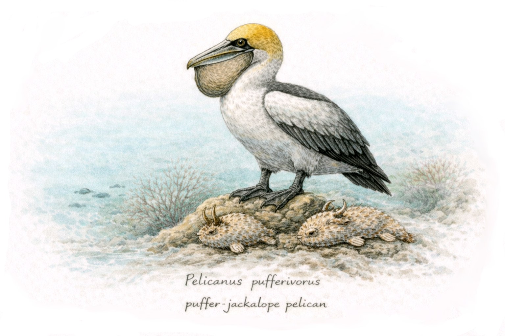
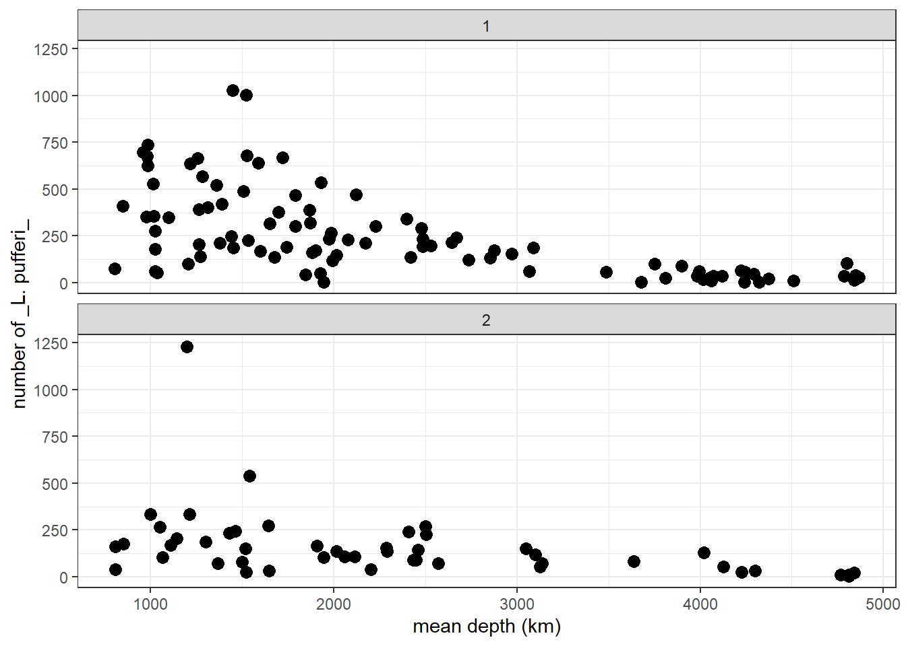
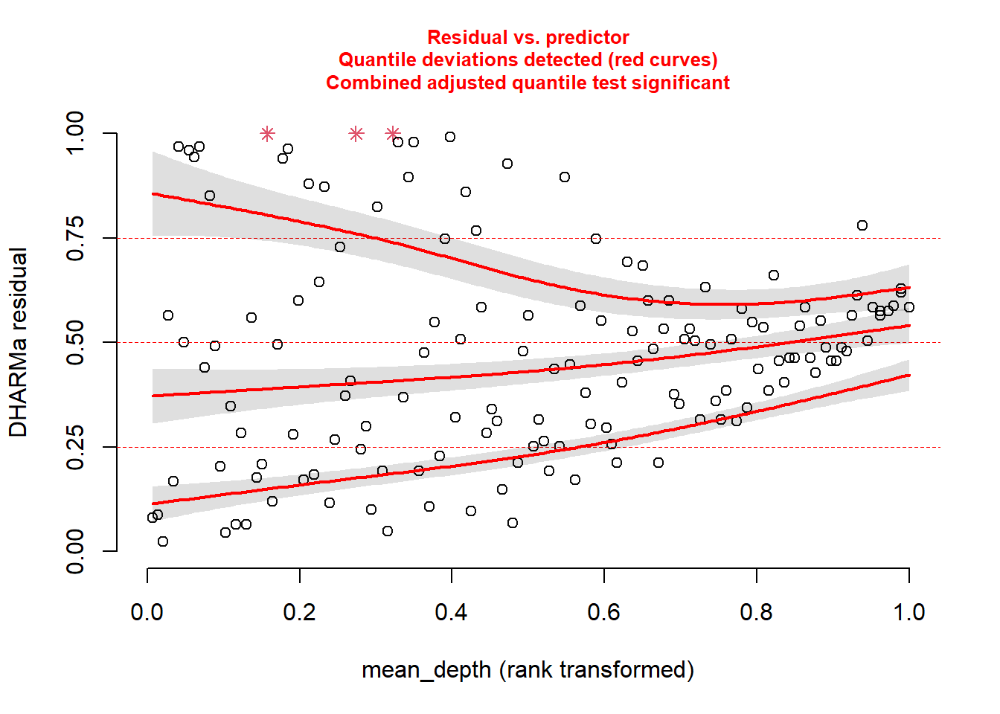
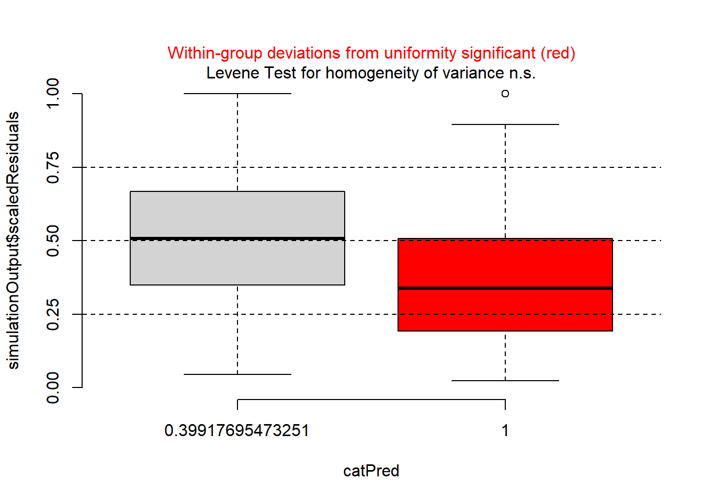
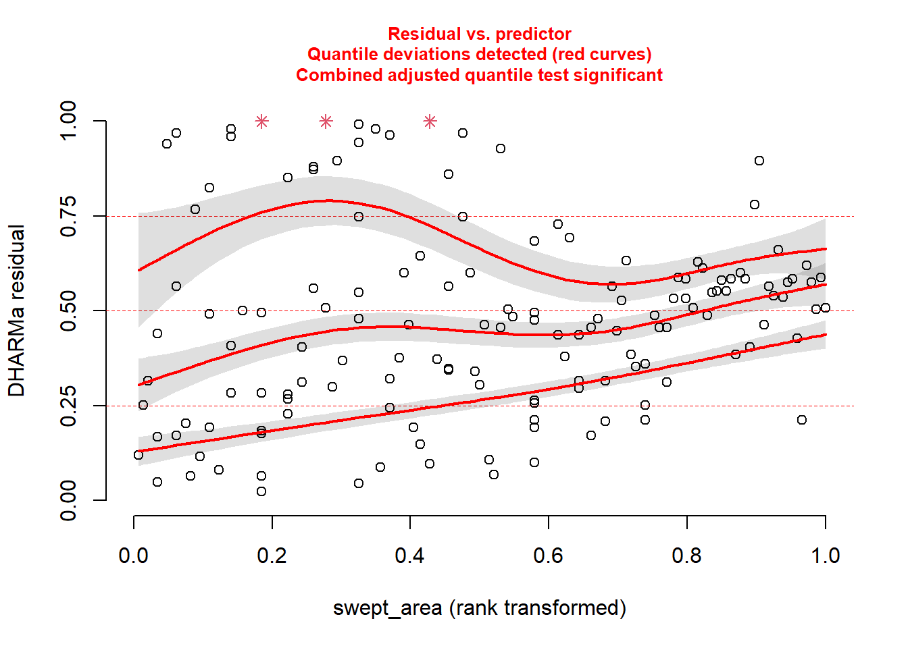
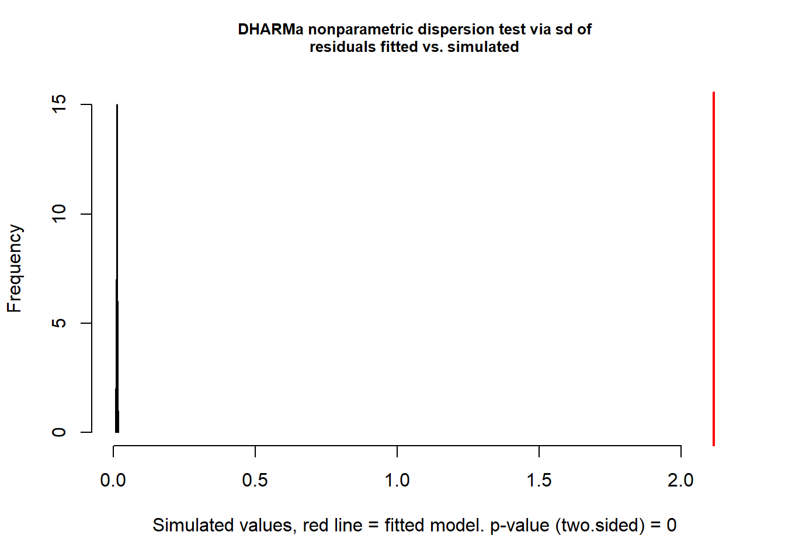
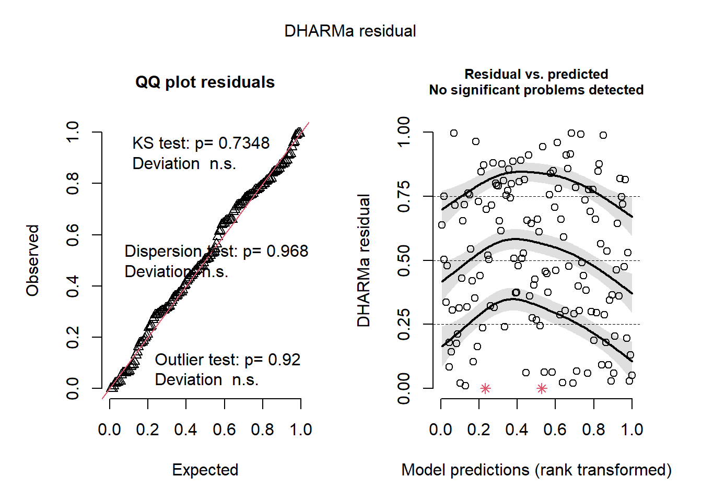
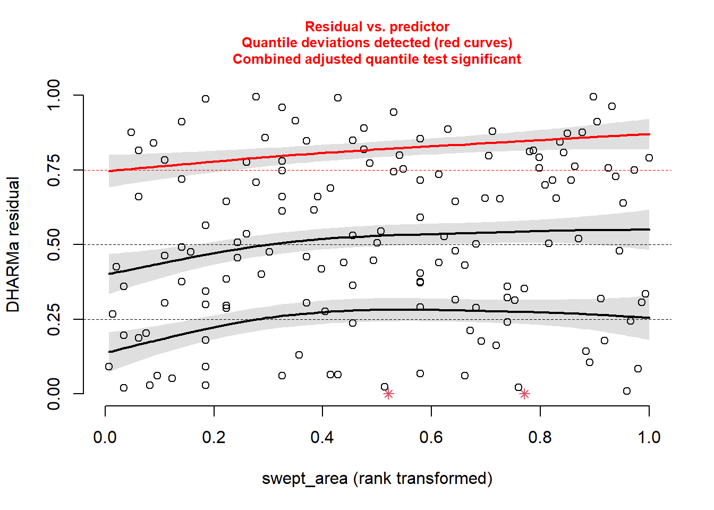
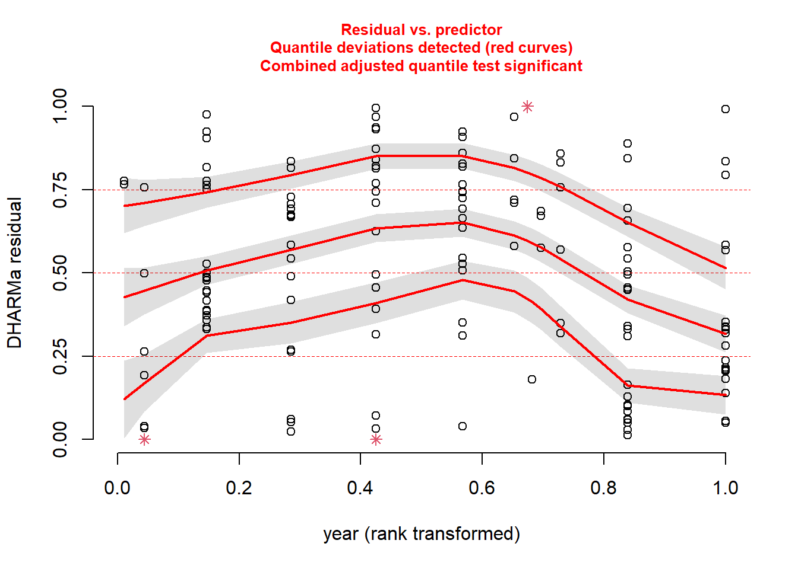
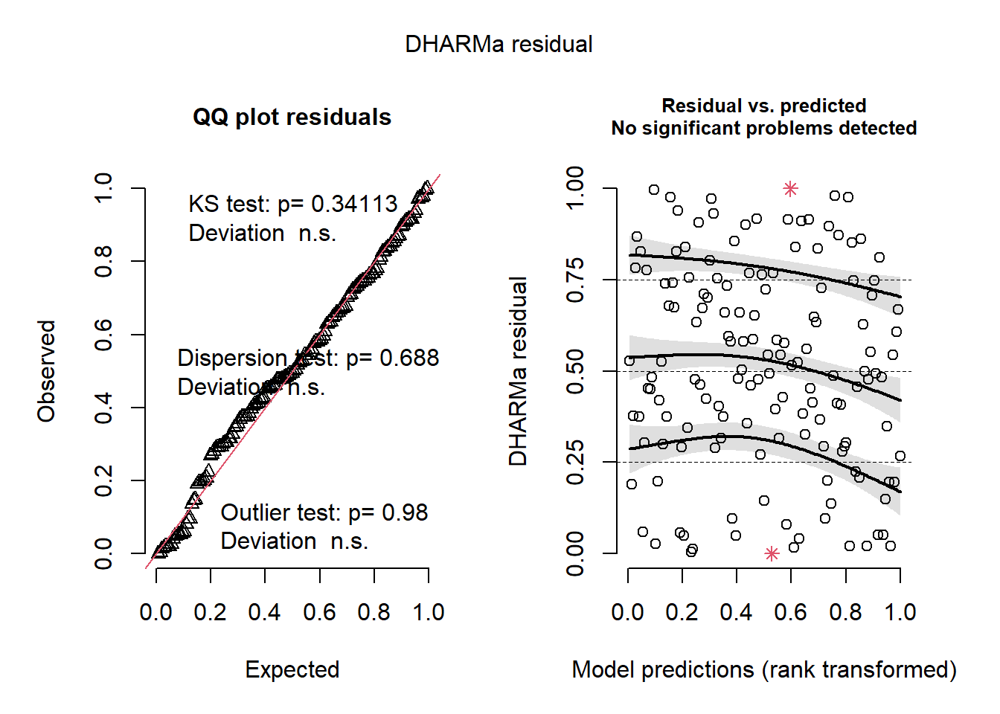

source("class_r_scripts/load_packages.r")21 Tutorial: GLMs
21.1 Introduction

In this tutorial, we introduce Generalized Linear Models (GLMs), starting with how to construct a Poisson GLM. This example purposefully starts with a simple –and inaccurate– model to illustrate the process of building a better, more explanatory model.
This should highlight the idea discussed in the video that identifying an optimal model structure often solves many of the issues with model assumptions.
For this first example, we will use a dataset collected on Lepusantilocapra pufferi (puffer jackalope), starting in the mid-1970s. The data include the following variables:
site: where the individuals were sampledabund: number of individuals detected at each locationdens: density of individuals at each sampling locationmean_depth: mean depth, in meters of the sampling locationyear: year of the studyperiod: 1=before and 2= after introduction of Pelicanus pufferivorus (puffer-jackalope pelican)x_km: longitude (decimal degrees) of sampling locationy_km: latitude (decimal degrees) of sampling locationswept_area: size in square meters of the sampling location (effort)
You are tasked with examining/testing the relationship between total Lepusantilocapra pufferi abundance and mean depth for each time period (before/after introduction of puffer-jackalope pelican).
21.2 Set up workspace
21.3 Generalized Linear Model (Gaussian error distribution)
Read in the Lorax pufferi dataset and examine its structure. Remember that you can also use the glimpse function here.
pufferi <- read.csv("class_exercise_data/lepusantilocapra_pufferi_abundance.csv")
str(pufferi) # examine data structure'data.frame': 146 obs. of 9 variables:
$ site : int 1 2 3 4 5 6 7 8 9 10 ...
$ abund : int 76 161 39 410 177 695 352 674 624 736 ...
$ dens : num 0.00207 0.00352 0.000981 0.008039 0.005933 ...
$ mean_depth: int 804 808 809 848 853 960 977 982 985 986 ...
$ year : int 1978 2001 2001 1979 2002 1980 1981 1979 1982 1980 ...
$ period : int 1 2 2 1 2 1 1 1 1 1 ...
$ x_km : num 98.8 76.8 103.8 91.5 107.1 ...
$ y_km : num -57.5 178.6 -50.1 146.4 -37.1 ...
$ swept_area: num 36710 45741 39775 51000 29831 ...Note: Though the readr::read_csv function is commonly used, the initial warning messages upon import may throw off users who are unfamiliar with what it is doing. The function does provide quite a bit more flexibility in defining column types, but we do not need it for this example. So, here, we are using the base R function read.csv. You should feel free to use any data import function that you prefer.
Let us explore the data a bit to see what we are up against. Obviously, a formal exploratory data analysis requires quite a bit more detailed examination, but this should serve us well right now.
p <- ggplot2::ggplot(pufferi, aes(x = mean_depth, y = abund)) +
geom_point(color = "black", size = 3) +
facet_wrap(~ period, ncol = 1, nrow = 2) +
labs(x = "mean depth (km)", y = "number of _L. pufferi_") +
theme_bw()
p
From this two-panel scatterplot, we observe (but do not yet find statistical support for) a general decline in L. pufferi abundance with mean depth. Of course, our desire to see a pattern might be influenced by a general decrease in variation in the number of L. pufferi as mean depth increases. So, let us change this informal notion about what the data show to something more scientific. Specifically, we need a framework that separates effectively separates the signal from the underlying noise.
Let us develop our first GLM. There are a variety of packages and functions for GLMs and their more complicated and powerful extensions. In this course, we will try to use the packages/functions that (1) have similar model syntax (even though used in Bayesian approaches), and (2) are used in the majority of published work of the last few years.
Let us run a GLM without considering the distribution of our response variable. We use the mass::glm function, a versatile model function for non-clustered data (i.e. data that has no hierarchical structure like multiple samples collected for each individual, or multiple students from multiple schools from multiple school districts).
base_model <- glm(abund ~ mean_depth, data = pufferi)This model structure will be very similar across all the modeling functions we discuss in the course. This is a very standard formula structure in R. This structure simply means tht abundance is modeled as a function of mean_depth. That is, the response variable (abund) is on the left side of the tilde (~) and the predictors are on the right side of the tilde.
Let us view the summary output of this model in two ways: First, use the summary function to review the summary of the model object you just created (base_model). For many model objects in R, the summary function yields the same result.
summary(base_model)
Call:
glm(formula = abund ~ mean_depth, data = pufferi)
Coefficients:
Estimate Std. Error t value Pr(>|t|)
(Intercept) 451.39068 33.28310 13.562 < 2e-16 ***
mean_depth -0.09758 0.01232 -7.918 5.92e-13 ***
---
Signif. codes: 0 '***' 0.001 '**' 0.01 '*' 0.05 '.' 0.1 ' ' 1
(Dispersion parameter for gaussian family taken to be 34192.14)
Null deviance: 7067483 on 145 degrees of freedom
Residual deviance: 4923668 on 144 degrees of freedom
AIC: 1942.5
Number of Fisher Scoring iterations: 2Results in this table can sometimes be a bit daunting if you are not familiar with regression. A relatively newcomer to the R package scene is the broom package. You can use the broom package to make the model output more human-friendly. This also saves you –to some extent– from learning how to extract specific output components from model objects from different packages. And the broom functions will certainly save you a huge amount of time outputting model results, residuals, and predicted values.
First, just examine the effect sizes.
# Tidy model coefficients
tidy_glm <- tidy(base_model, conf.int = TRUE)
print(tidy_glm)# A tibble: 2 × 7
term estimate std.error statistic p.value conf.low conf.high
<chr> <dbl> <dbl> <dbl> <dbl> <dbl> <dbl>
1 (Intercept) 451. 33.3 13.6 1.63e-27 386. 517.
2 mean_depth -0.0976 0.0123 -7.92 5.92e-13 -0.122 -0.0734Then, you can check out the model fit. This is just for your information; we will do this in depth when we discuss how to report your results. But it is avdantageous to build some strong habits now! And I also want to give you some tools, so you can start adding them to your ever-improving analytical workflow!
# Glance at model-level statistics
glance_glm <- glance(base_model)
print(glance_glm)# A tibble: 1 × 8
null.deviance df.null logLik AIC BIC deviance df.residual nobs
<dbl> <int> <dbl> <dbl> <dbl> <dbl> <int> <int>
1 7067483. 145 -968. 1943. 1951. 4923668. 144 146Next, we can calculate model residuals and then add these values to (i.e. “augment”) our original dataset.
# Augment the original data with predictions and residuals
augment_glm <- augment(base_model)
print(augment_glm)# A tibble: 146 × 8
abund mean_depth .fitted .resid .hat .sigma .cooksd .std.resid
<int> <int> <dbl> <dbl> <dbl> <dbl> <dbl> <dbl>
1 76 804 373. -297. 0.0181 184. 0.0243 -1.62
2 161 808 373. -212. 0.0181 185. 0.0123 -1.15
3 39 809 372. -333. 0.0181 183. 0.0305 -1.82
4 410 848 369. 41.4 0.0175 186. 0.000454 0.226
5 177 853 368. -191. 0.0175 185. 0.00966 -1.04
6 695 960 358. 337. 0.0160 183. 0.0276 1.84
7 352 977 356. -4.05 0.0158 186. 0.00000393 -0.0221
8 674 982 356. 318. 0.0158 184. 0.0241 1.74
9 624 985 355. 269. 0.0157 184. 0.0171 1.46
10 736 986 355. 381. 0.0157 183. 0.0344 2.08
# ℹ 136 more rowsThe results (from summary() or broom::tidy functions) show a significant effect of mean_death. As an aside, it might not be the best to use the term effect, as this technically implies a causal structure. But it is common usage, so we will stick to it. Just be cautious of using wording that does not match with your hypotheses and predictions.
22 Checking residuals for heteroscedaticity and violations to normality.
For every final model, we need to check the structure of the residuals. In the past, this was a relatively tiresome task, which involved visual inspection of Pearson residuals. With the advent of the DHARMa package in R, this becomes much easier. A vignette for this package is exceptional and can be found [here] (https://cran.r-project.org/web/packages/DHARMa/vignettes/DHARMa.html#calculating-scaled-residuals).
The package does not use Pearson residuals and instead generates simulated (standardized) residuals, making it more suitable for diagnosing generalized linear models (GLMs), mixed models, and other complex models. This simulation-based approach makes this step insensitive to sample size and allows you to more easily detect overdispersion, zero-inflation, heteroscedasticity, and model misspecification.
The most general function is for the simulation of residuals, simulateResiduals(), which is run on the fitted model.
sim_res <- simulateResiduals(base_model)We can then plot this simulation:
plot(sim_res)
You can immediately an abundance of red-colored text, indicating that there are some series issues. These issues may be caused diretly by variance issues, non-normality, or, most likely, model misspecification. The left plot indicates issues with normality and outlliers. The right plot is very informative as well; it converts the residuals into percentiles (y-axis), and then tests the 25%, 50%, and 75% percentiles of the model’s residuals against those expected percentiles. Ideally, the three lines would follow the horizontal lines drawn at 0.25, 0.50, and 0.75. In this case, they do not.
There are other built-in functions as well, including the following (these descriptions are taken directly from the [DHARMa package vignette] (https://cran.r-project.org/web/packages/DHARMa/vignettes/DHARMa.html#calculating-scaled-residuals):
testUniformity()- tests if the overall distribution conforms to expectationstestOutliers()- tests if there are more simulation outliers than expectedtestDispersion()- tests if the simulated dispersion is equal to the observed dispersiontestQuantiles()- fits a quantile regression or residuals against a predictor (default predicted value), and tests of this conforms to the expected quantiletestCategorical(simulationOutput, catPred = testData\$group)tests residuals against a categorical predictortestZeroinflation()- tests if there are more zeros in the data than expected from the simulationstestGeneric()- test if a generic summary statistics (user-defined) deviates from model expectationstestTemporalAutocorrelation()- tests for temporal autocorrelation in the residualstestSpatialAutocorrelation()- tests for spatial autocorrelation in the residuals. Can also be used with a generic distance function, for example to test for phylogenetic signal in the residuals
Back to our model. We know something is going wrong. But what exactly? We can plot the simulated residuals against predictors in our model, using the plotResiduals function. This is a specialized DHARMa function.
Plot against mean_depth.

And then plot against period.
plotResiduals(sim_res, pufferi$period)
…and against year.
plotResiduals(sim_res, pufferi$year)
And then, just for kicks, against our measure of sampling effort (swept_area).
plotResiduals(sim_res, pufferi$swept_area)
For each of these, you see statistical evidence that something is wrong with your model.
22.1 Generalized Linear Model (Poisson error distribution)
Looking more closely at the data, we realize that our variable for abundance is simple count data (integer). Make a histogram:
hist(pufferi$abund, breaks=100)
The distribution also ranges from zero to infinity (right-skewed). So, let us try a Poisson error distribution with the default link function; this is often a good first guess for count data.
base_model_pois <- glm(abund ~ mean_depth,
data = pufferi,
family = poisson(link = "log"))Here we are using the log link function, the preferred one for the Poisson distribution. Now, check your model residuals:
sim_res <- simulateResiduals(base_model_pois)We can then plot this simulation:
plot(sim_res)
Uh, oh. You know that you’ve correctly identified a distribution that fits your data boundaries. But, clearly, there are still patterns in these residuals that should not be present. So there are other issues going on as well. Perhaps the issues are related to model misspecification. Believe it or not, despite the horrific simulated residuals, you are now one step closer to building a successful GLM.
23 Overdispersion: a common issue with Poisson GLMs
Given that our Poisson GLM has issues, maybe a Poisson distribution was not a good assumption for the data-generating process underlying the response variable. Another error distribution –the negative binomial distribution– is a possible alternative. It satisifies our known data boundaries but has one more parameter that allows for variance to be greater than the mean (i.e. overdispersion). This is unlike the Poisson distribution, where mean is equal to the variance. Let us first check for such overdispersion using the testDispersion() function in DHARMa.
testDispersion(sim_res)
DHARMa nonparametric dispersion test via sd of residuals fitted vs.
simulated
data: simulationOutput
dispersion = 161.36, p-value < 2.2e-16
alternative hypothesis: two.sidedThis is a wickedly easy way to test for overdispersion. If the result is significantly greater than 1 (here, it is 161.36 with p<0.0001), there is overdispersion. Let us then try the negative binomial distribution. Note that this is a specialized function for GLMs; you will likely never use the gml.nb function in your work (as it is too simple a framework for your complex data).
mod_nb <- glm.nb(abund ~ mean_depth, data = pufferi)
summary(mod_nb)
Call:
glm.nb(formula = abund ~ mean_depth, data = pufferi, init.theta = 1.866869569,
link = log)
Coefficients:
Estimate Std. Error z value Pr(>|z|)
(Intercept) 6.859e+00 1.329e-01 51.63 <2e-16 ***
mean_depth -7.388e-04 4.965e-05 -14.88 <2e-16 ***
---
Signif. codes: 0 '***' 0.001 '**' 0.01 '*' 0.05 '.' 0.1 ' ' 1
(Dispersion parameter for Negative Binomial(1.8669) family taken to be 1)
Null deviance: 316.56 on 145 degrees of freedom
Residual deviance: 158.75 on 144 degrees of freedom
AIC: 1757.9
Number of Fisher Scoring iterations: 1
Theta: 1.867
Std. Err.: 0.209
2 x log-likelihood: -1751.852 Now, you can retest for overdispersion to see is switching from Poisson to negative binomial was a good and logical move:
testDispersion(mod_nb)
DHARMa nonparametric dispersion test via sd of residuals fitted vs.
simulated
data: simulationOutput
dispersion = 0.9353, p-value = 0.968
alternative hypothesis: two.sidedThis looks good. Once again, check residual structure.
sim_res <- simulateResiduals(mod_nb)
plot(sim_res)
Whoa! That looks clean. The overall model residuals –that is, residuals pooled across all observations– show no departures from normality, no overdispersion, and no obvious outliers.
However, these checks only tell us how the model behaves on average. Because our dataset includes other variables of interest, including one related to sampling effort, we also need to inspect simulated residuals as a function of those variables to look for structured lack of fit. This can be a slightly arduous process, but it is invaluable for understanding how your model is behaving.
First, plot against mean_depth.
plotResiduals(sim_res, pufferi$mean_depth)
This looks good. There is no residual structure. Plot against period:
plotResiduals(sim_res, pufferi$period)
There’s a problem here. There is a clear sign that the GLM assumption of homogeneity of variance has been violated.
Now, plot residuals against year.
plotResiduals(sim_res, pufferi$year)
There is another issue here. And then, just for kicks, against our measure of sampling effort (swept_area).
plotResiduals(sim_res, pufferi$swept_area)
There is a bit of structure here. So, this suggests that we may not have included in our model some important covariates like period, year, or swept_area. We will do that in the next step.
First, let us deal with the sampling effort variable (swept_area), as it makes sense to include this in every model. For any case in which you have sampling effort (for any of the models discussed in this course), you need to include an offset. This is a much better solution that dividing the response variable by the sampling effort prior to analysis (please, avoid this if possible), as this can alter the response variable’s distribution to something unrecognizable (and therefore not easily approximated by a common error distribution).
In this present case, we are accounting explicitly for differences in size of the sampling area. In other words, we are adjusting abund so that it becomes the total number of L. pufferi per site (or per size of site). Remember we are using the log-link function; this means we need to directly log-transform the swept_area variable before putting it in an offset() function. This is crtically important! as this tells the model function to recognize that term as a correction for the response variable. That is, this puts the effort term on the link scale. Let us do that here:
pufferi$log_sa <- log(pufferi$swept_area) # log-transform sweap_area
mod_nb_offset <- glm.nb(abund ~ mean_depth + offset(log_sa),
data = pufferi)
TipFair use of data transformation
In this course, I encourage you to avoid any sort of data transformation for the variables in your model. Transforming an offset variable is the one exception; it is required to ensure that the model recognizes that the new offset term is on the link scale.
Now, we again simulate the residuals and plot against mean_depth, period, and year.
sim_res <- simulateResiduals(mod_nb_offset)
plotResiduals(sim_res, pufferi$mean_depth)
plotResiduals(sim_res, pufferi$period)
plotResiduals(sim_res, pufferi$year)
23.1
The problems with residuals remain. This means that this really is a case of model misspecification, so let us think about what other factors we should include. Note that the model names could possibly be improved. As you review the models, think critically about each one means. In all models, we include the offset variable.
mod_nb_offset_01 <- glm.nb(abund ~ offset(log_sa),
data = pufferi)
mod_nb_offset_02 <- glm.nb(abund ~ mean_depth + offset(log_sa),
data = pufferi)
mod_nb_offset_03 <- glm.nb(abund ~ period + offset(log_sa),
data = pufferi)
mod_nb_offset_04 <- glm.nb(abund ~ year + offset(log_sa),
data = pufferi)
mod_nb_offset_05 <- glm.nb(abund ~
mean_depth + period + offset(log_sa),
data = pufferi)
mod_nb_offset_06 <- glm.nb(abund ~
mean_depth + year + offset(log_sa),
data = pufferi)
mod_nb_offset_07 <- glm.nb(abund ~
period + year + offset(log_sa),
data = pufferi)
mod_nb_offset_08 <- glm.nb(abund ~
mean_depth * period + year + offset(log_sa),
data = pufferi)
mod_nb_offset_09 <- glm.nb(abund ~
mean_depth * year + period + offset(log_sa),
data = pufferi)
mod_nb_offset_10 <- glm.nb(abund ~
mean_depth + year * period + offset(log_sa),
data = pufferi)Note that these models test all two-way combinations (including interactions). A sort of null hypothesis —although some would disagree philosophically– is the first model (mod_nb_offset_01), as it contains only the offset variable. Let us calculate AIC and then sort the output in ascending order of AIC (where lowest AIC is the best-supported model). Note that this is bonus material right now.
aic_df <- AIC(
mod_nb_offset_01,
mod_nb_offset_02,
mod_nb_offset_03,
mod_nb_offset_04,
mod_nb_offset_05,
mod_nb_offset_06,
mod_nb_offset_07,
mod_nb_offset_08,
mod_nb_offset_09,
mod_nb_offset_10
)
aic_df <- aic_df |>
arrange(AIC)Let us check those residuals of the top model. There are better ways of doing this, but let us be simple for now.
sim_res <- simulateResiduals(mod_nb_offset_10)
plot(sim_res)
These look great so far, but let’s check the residuals against the predictors in the model.
plotResiduals(sim_res, pufferi$mean_depth)qu = 0.75, log(sigma) = -2.701421 : outer Newton did not converge fully.Warning in newton(lsp = lsp, X = G$X, y = G$y, Eb = G$Eb, UrS = G$UrS, L = G$L,
: Fitting terminated with step failure - check results carefully
This looks great!
plotResiduals(sim_res, pufferi$period)
OK, we’re starting to get the picture here that we’ve done something up.
plotResiduals(sim_res, pufferi$year)This was the final check. We’ve specified the model correctly, and we have confirmed that there is no residual structure.
We have successfully formulated a Generalized Linear Model!